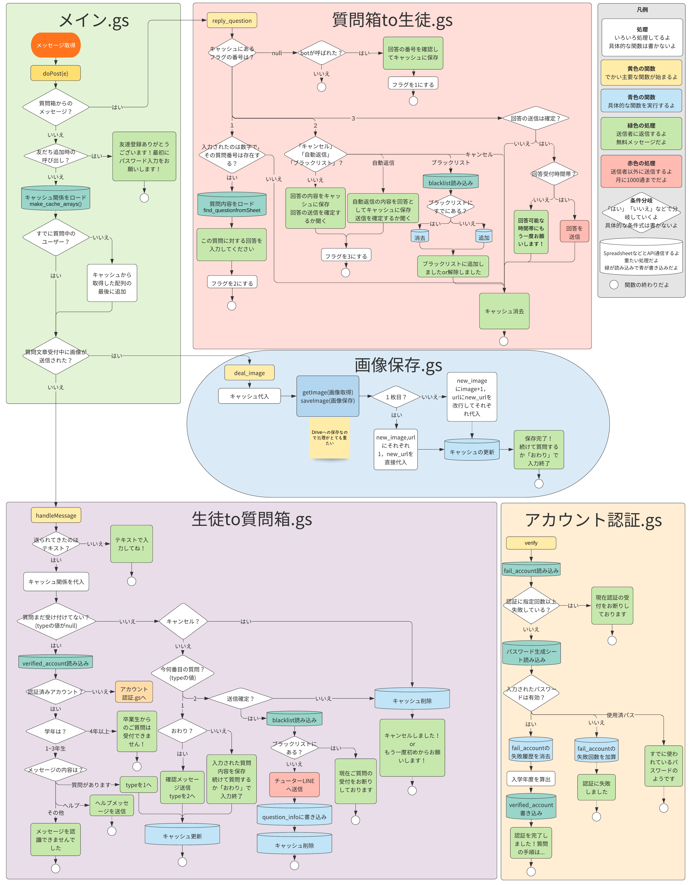

簡単な概要
都内某公立高校において，生徒さんが大学生講師(チューター)にオンラインで気軽に質問できるように，LINEを利用して匿名で質問ができるシステムを開発した．
背景知識
都内某公立高校では，大学生講師(チューター)による自習学習支援事業が行われている．
業務内容としては，定期考査１周間前の放課後や長期休暇中に高校を訪れ，質問のある生徒さんの学業の手助けをするというもの．
チューター業務の課題
- コロナ禍において対面での指導業務が不可能
- 質問しに行く敷居の高さによる利用者の少なさ
提案手法
LINEで質問できるようにし，利用者数の増大と遠隔でのチューター業務を実現する．
質問受付の流れ
- 生徒さんが自身のLINEにbotを友だちとして登録する
(学校経由でQRコードを配布する) - アクティベーションキー認証をする
(チューターは鍵の一覧表を持つが，生徒の学籍番号と結びつけることはできない) - 生徒さんがbotとのトーク画面から質問を送信する
(写真の添付も可能) - 送信を確定するとbotがチューター側に質問内容を連絡する(個人情報は一切取得されない)
- チューターがbotに対して質問の回答をすると，botが生徒さんに回答内容を送信する
.png)
▲チャットボットキャラクターの清瀬清子ちゃん
.jpg)
.jpg)
.jpg)
.jpg)
.jpg)
.jpg)
.jpg)
.jpg)
.jpg)
なぜ個人情報が取得されないのか？
LINEには匿名IDというものが設定されており，これを取得・利用してbotが送信するため(メルカリの匿名配送に似た仕組み)．
匿名IDは一般ユーザにとっては意味のない文字列であり，チューターが知ったとしてもこれを利用して生徒さんと直接連絡を取ることは不可能．
学校側との連携について
生徒さんからの質問とチューターからの回答の内容については以下の手法で先生方と共有可能
- 質問内容を記録しているGoogle Spreadsheetの共有(Googkeアカウントが必要)
- 質問内容の通知と回答処理を行うLINEグループに参加(LINEアカウントが必要)
技術面の解説
使っているもの：
GAS：botを動かすためのコードは全てGASで制御している．
Google Spreadsheet：質問内容の管理やキャッシュ管理など
Google Drive：画像の保存
LINE Developers：botの設定やwebhook URLの登録，アクセストークンの発行など
コードを管理するエンジニアとbotを管理する管理者(非エンジニア)に権限を分散することで悪意のあるエンジニアの暴走を防いでいる．
コードについて：
フローチャート
メイン.gs
メッセージが来るたびにメイン.gs内のdoPost(e)が発火する．本botの処理は全てdoPostを起点に進む．グループIDを取得し，チューター側からの送信であれば質問箱to生徒.gsのreply_questionへ．
キャッシュ関係をSpreadsheetからロードし，取得した質問者のuserIDと比較して，質問者がすでに質問中か否か判断．質問中でなければ新たにキャッシュに追加．
質問を受けている最中に画像が送信された場合，画像保存.gsへ．そうでなければ生徒to質問箱.gsへ．
生徒to質問箱.gs
できること：
- 認証済みアカウントか否かのチェック
- ヘルプで使い方の確認
- 質問の受付(以下生徒側のフロー)
- 「質問があります」で質問の入力へ
- 質問内容を送信(複数回のテキストにわけたり，画像の添付も可能)
- 「おわり」で質問の入力を終了
- 質問内容を確認し，「はい」で送信完了
アカウント認証.gs
認証の済んでいないアカウントからメッセージを受け取った際，入力されたアクティベーションキーが正しいかどうか判断する．
正しい鍵であれば認証済みアカウントに追加し，鍵の種類から学年を割り出し保存する．(学年以外の情報は取得できない仕様)
間違った鍵を５回入力すると，以降そのアカウントからは認証を受け付けない．鍵は一度しか使用できない．
画像保存.gs
上の3で画像が添付された際の処理．Driveに保存するため，他の処理に比べてかなり重たい．(6秒程度待たされる)
質問箱to生徒.gs
できること：
- 質問への回答
- 自動返信
- ブラックリストへ登録・解除
以下チューター側のフロー
- botに呼びかけて回答の入力へ
- 質問番号を入力(質問受付完了時にSpreadsheetの行数として質問番号が割り振られる)
- 回答内容の入力or自動返信*orブラックリスト操作**
- 回答内容を確認し，「はい」で送信完了
*自動返信は”チューターから回答するのが難しい質問に対して使用(学業に著しく関係のない質問，意図が掴みきれない質問などを想定)．
**ブラックリストに入ると生徒to質問箱.gsの４の部分で送信できなくなる．非常に悪意のある操作により，システムの運営が困難になった際に使用する．
質問箱to生徒.gsではキャッシュ管理をCache Serviceを利用して実装している．生徒to質問箱.gsではキャッシュの量が大量になるため，少し重たくなるがSpreadsheetに一時期的に書き込みしている．